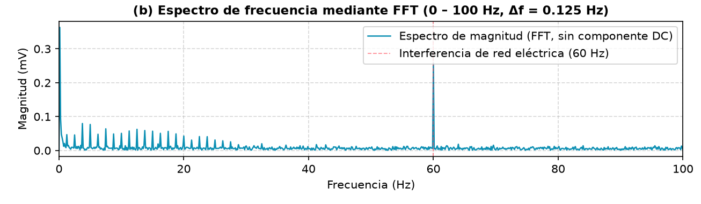
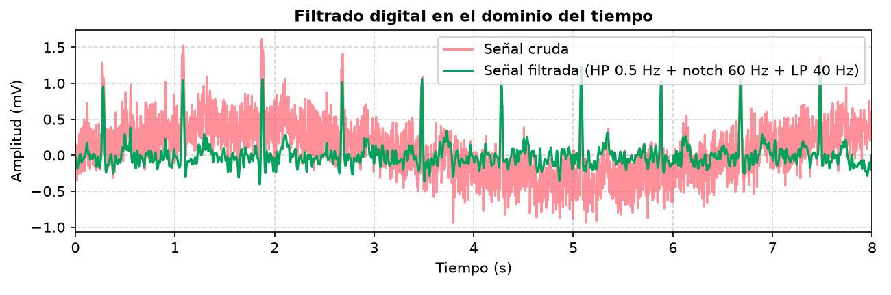
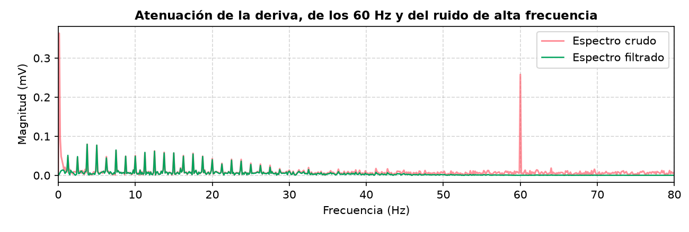

Universidad de Manizales · Teoría de Señales
Generador de ECG, Arduino con el módulo AD8232 y una aplicación web que filtra la señal y calcula la frecuencia cardíaca en tiempo real.
Jerónimo Soto Villada
Milady Cristina Guapacha Montoya
Sustentación final del proyecto semestral
fs = 250 HzFFTFiltros IIRPan-TompkinsArduino + AD8232
Guion
1 · Presentación del proyecto
El electrocardiograma (ECG) registra la actividad eléctrica del corazón. Como señal tiene tres características que corresponden a los temas del curso:
Generar o adquirir un ECG, representarlo en el tiempo y en la frecuencia, filtrarlo y calcular la frecuencia cardíaca (BPM) en tiempo real.
Pregunta guía: ¿cómo separar el latido de estas perturbaciones para medir un BPM confiable?
1 · Presentación del proyecto
Genera un ECG sintético (ondas P, Q, R, S, T) con BPM, amplitud y ruido ajustables, para estudiar la señal sin hardware.
Filtros digitales y detector de QRS de Pan-Tompkins en el navegador; análisis FFT y filtrado en Python (SciPy).
Arduino con el AD8232, servidor Node.js y base de datos MySQL para usuarios e historial. Publicada en Internet.
2 · Demostración de funcionamiento
La página está publicada: simulador, filtros y cálculo del BPM funcionan en cualquier navegador.
Abrir el simuladorSi la señal no es confiable (electrodos sin contacto, amplificador saturado o mucho ruido), la página lo indica y no muestra un BPM falso.
3 · Análisis de señales · la señal
Período y frecuencia del latido
$$T_{RR} = \frac{60}{\text{BPM}} \qquad f = \frac{\text{BPM}}{60} \tag{1}$$Ejemplo: con 75 lpm, \(T_{RR} = 0.8\ \text{s}\) y \(f = 1.25\ \text{Hz}\).
Teorema de muestreo (Nyquist)
$$f_s \ge 2\, f_{\max} \qquad T_s = \frac{1}{f_s} \tag{2}$$El ECG llega hasta ≈ 100 Hz; muestreamos a \(f_s = 250\ \text{Hz}\), es decir, una muestra cada \(T_s = 4\ \text{ms}\).
3 · Análisis de señales · el ruido
La FFT separa la señal en sus frecuencias. Así se ve dónde está cada problema:
| Ruido | Dónde aparece | Filtro |
|---|---|---|
| Deriva (respiración, movimiento) | Menos de 0.5 Hz | Pasa-altas |
| Red eléctrica | Exactamente 60 Hz | Notch |
| Ruido muscular | Frecuencias altas | Pasa-bajas |
Los latidos se ven como líneas cada 1.25 Hz, que es justamente \(f = \text{BPM}/60\) para 75 lpm.

3 · Análisis de señales · procesamiento
Elimina la deriva de la línea base.
Ganancia: 0.15 Hz → 0.29 · 10 Hz → 0.99
Anula solo la frecuencia de la red eléctrica.
Ganancia: 60 Hz → 0.000 · resto ≈ 1
Atenúa el ruido de alta frecuencia.
Ganancia: 40 Hz → 0.707 (−3 dB) · 100 Hz → 0.45
\(x[n]\): muestra de entrada · \(y[n]\): muestra de salida · \(n-1\): muestra anterior. Son ecuaciones en diferencias de sistemas LTI causales (sirven en tiempo real); en Python se usa además filtfilt, de fase cero, para el análisis fuera de línea.
3 · Análisis de señales · procesamiento
Frecuencia cardíaca con la mediana de los últimos 8 intervalos RR
$$\text{BPM} = \frac{60}{T_{RR}} \tag{6}$$Si \(T_{RR} = 0.8\ \text{s}\), entonces \(\text{BPM} = 60/0.8 = 75\) y \(f = 1.25\ \text{Hz}\).
4 · Resultados y validación


Error RMS frente a la señal limpia
0.368 → 0.083 mV
El error se reduce unas 4.4 veces tras filtrar.
El pico R baja de ≈ 1.2–1.6 mV a ≈ 1.0 mV: limpiar el ruido también deforma un poco la onda. La FFT recupera la frecuencia del latido: 1.250 Hz → 75.0 lpm.
4 · Resultados y validación
npm test)| BPM real | Señal normal | Ruido 30 % + 60 Hz + deriva | Amplitud 0.5× |
|---|---|---|---|
| 40 | 40 | 40 | 40 |
| 60 | 60 | 60 | 60 |
| 75 | 75 | 75 | 75 |
| 90 | 90 | 90 | 90 |
| 120 | 120 | 120 | 120 |
| 150 | 150 | 150 | 150 |
| 180 | 181 | 181 | 179 |
Error máximo: 1 lpm. Sin electrodos, el sistema muestra «--» en lugar de un valor falso.
5 · Conclusiones
Señales continuas y discretasMuestreo y NyquistCuantización (ADC)PeriodicidadFourier y FFTResolución espectralRuido e interferenciaFiltros pasa-altas, notch y pasa-bajasEcuaciones en diferenciasFunción de transferencia H(z)Detección de eventos
¿Preguntas?